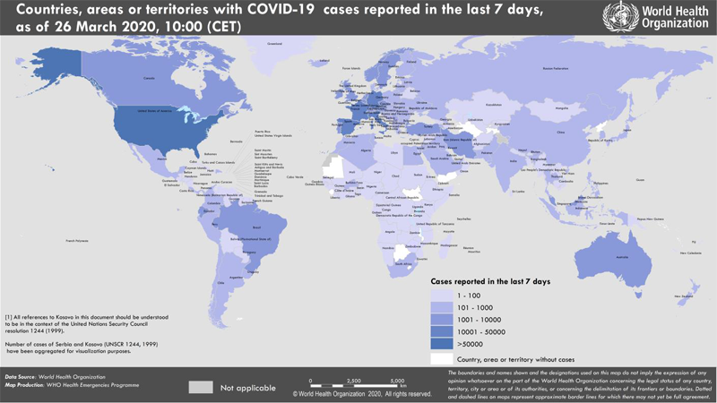

Текущая ситуация с коронавирусом Covid-19: информация ВОЗ от 26.03.2020
Date: 2020-03-27 08:50:00
Topic: Инфекционные заболевания, клиника, диагностика и лечение
На сайте ВОЗ размещены данные на 26.03.2020 о распространении в мире инфекции, вызванной коронавирусом Covid-19 (SARS-CoV-2). Всего в мире на 26.03.2020 зарегистрировано 462684 подтверждённых случаев заболевания.
На сайте ВОЗ размещены данные на 26.03.2020 о распространении в мире инфекции, вызванной коронавирусом Covid-19 (SARS-CoV-2).
- Всего в мире зарегистрировано 462684 подтверждённых случаев заболевания коронавирусом Covid-19.
- Из подтверждённых зарегистрированных случаев 81961 были зарегистрированы в Китае.
- Зарегистрировано 20834 летальных исходов (всего в мире), из них 3293 — в Китае, 7505 — в Италии, 2077 — в Иране, 3434 — в Испании, 1331 — во Франции, 884 — в США.
- 380723 подтверждённых случаев заболевания были зарегистрированы за пределами Китая, в том числе 840 в России, 86 в Республике Беларусь, 156 в Украине (рис. 1).
- Неблагоприятная ситуация по коронавирусу складывается в Италии, где уже зарегистрировано 74386 случаев заболевания, в США (63570), в Испании (47610), в Иране (27017), в Германии (36508), во Франции (24920).
Рис. 1. Распространение нового коронавируса Covid-19: страны и территории с подтверждёнными случаями на 26.03.2020 г.

По данным из ArcGIS число заражённых на текущий момент 523163 (840 в России), из них 23639 летальных случаев (3 в России), число выздоровевших 122066.
This article comes from Антибиотики и антимикробная терапия
http://antibiotic.ru/
The URL for this story is: http://antibiotic.ru/index.php?article=2947 |
|
|